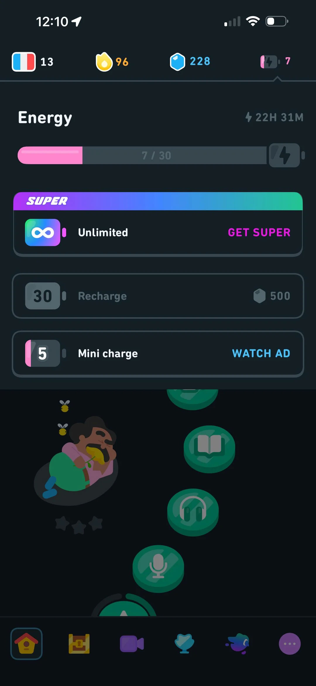
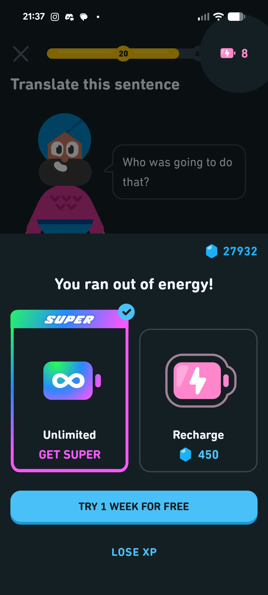
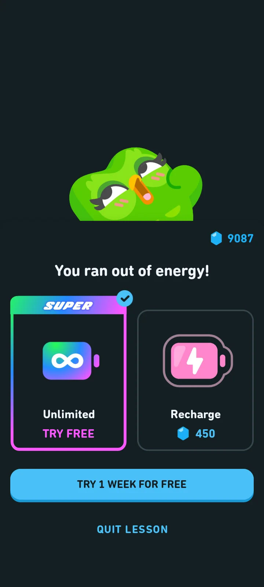

Auditable Design
Decision infrastructure for product teams. Preserves the chain of reasoning from raw user feedback to defensible design direction.
Feedback enters the product process as evidence.
It leaves as opinion.
Auditable Design keeps the reasoning intact.
Why this exists
Six weeks later, nobody can defend why that decision was made. The reasoning disappears.
The pipeline
Eight steps. One brief at the end.
Each layer has a named purpose, typed inputs, typed outputs, and an append-only provenance trail. Hover a layer to expand.
The cluster
…
…
Representative user quotes
Informing reviews
… review IDs aggregated by the clustering step, each traceable to a specific user complaint.
Measured pain
What actually hurts — … named defects, total severity …
Six design lenses read the same cluster independently —
Don Norman on usability, WCAG on accessibility, Kahneman on
decision psychology, Osterwalder on business alignment, Cooper
on interaction design, Garrett on UX architecture. The
pipeline merges their overlapping findings into one ranked
list. Each defect gets one severity score on a five-point
scale: 0 absent, 3 minor,
5 moderate, 7 serious,
9 critical.
Grounded verification
Claude Opus 4.7 checks every hypothesis against the real product
Review text says what users feel. Real product pixels say what they see. Opus 4.7 reads the Duolingo screenshots and scores each heuristic hypothesis as confirmed, partial, or refuted — with cited UI details — so the designer knows which review-inferred defects hold up on the actual product.



Duolingo is used as a public, worldwide-recognised freemium
example — not as a target. Every finding is anchored in a
literal quote from a
publicly available Google Play review,
every screenshot is what a paying user sees.
The method is product-agnostic.
Opus 4.7 confirmed every baseline heuristic on the product.
6 confirmed · 1 partial · 0 refuted (of 7 heuristics).
The review-inferred pain holds up under pixel inspection.
Beyond confirmation, the grounding step surfaced a defect the
baseline heuristic list did not name: a
pricing inconsistency across surfaces —
Super is 500 gems on the energy screen and 450 gems on the
paywall modal, same product, two price points in the same
session. Not a single-surface heuristic; it requires comparing
values across screenshots. Flagged as a candidate for the
next clustering cycle.
The validated direction
One direction generated · re-audited · converged
The pipeline first proposes a before/after direction grounded in the measured defects, then re-audits that direction against the same heuristic list to measure how much pain actually drops. Where residual severity remains, a refinement loop tweaks further under a scored verifier — accepting changes that reduce pain without regression, rejecting ones that do not. The full iteration trail, including rejected attempts, lives in the shipping brief below.
The shipping artifact
One markdown. Ten sections. Full audit trail.
The designer opens a single document and begins. Every finding traces back to evidence. Every iteration — accepted or rejected — is preserved. The agent does not commit, does not merge, does not ship; the work begins here and is owned by the human team.
The point is not to automate taste.
The point is to make product reasoning inspectable.
Not louder recommendations. Better accountability.